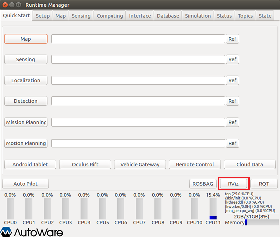
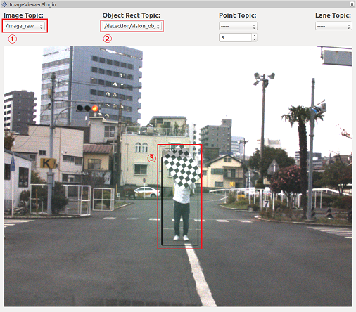

AcfDetector.m の利用例
Contents
1. Autoware の起動
Autoware を実行して ROS マスターを起動します。

Runtime Manager が立ち上がります。

2. rviz の起動
Runtime Manager の RViz ボタンをクリックして rviz を起動します。

3. imageViewerPlugin の表示
rviz が起動したら、メニューの［Panels］-［Add New Panel］を選択します。

起動した画面で「imageViewerPlugin」を選択します。

imageViewerPlugin 画面のサイズを調整します。 例えば、下図のように imageViewerPlugin 画面をフローティング状態にします。

その後、画面サイズを調整します。

4. 動画再生する rosbag ファイルの設定
Runtime Manager の Simulation タブを開きます。 「Ref」ボタンをクリックして、再生する rosbag ファイルを設定します。

5. MATLAB から Autoware（ROS マスター）への接続
MATLAB で rosinit コマンドを使用して ROS マスターに接続します。 rosinit の引数はご自身の環境に合わせて設定してください。
rosinit();
6. AcfDetector.m の起動
AcfDetector.m クラスファイルがあるフォルダを MATLAB 検索パスに登録後、 AcfDetector のインスタンスを生成し、人物検出処理を実行します。
acf_detector_folder = fullfile(autoware.getRootDirectory(), ... 'benchmark', 'computing', 'perception', 'detection', ... 'vision_detector', 'acf_detector'); addpath(acf_detector_folder); acf_detector_obj = AcfDetector();
7. rosbag の再生（Runtime Manager の Simulation タブ）
「Play」ボタンをクリックしてrosbag を再生します。

8. imageViewerPlugin の Topic 設定
- imageViewerPlugin の Image Topic を「/image_raw」に設定します。
- imageViewerPlugin の Object Rect Topic を「/detection/vision_objects」に設定します。
- 人物を検出すると Boundary Box が表示されます。

上図は、書籍「 Autoware 自動運転ソフトウェア入門」で提供されるサンプルデータを利用しています。
本サンプル実行時のノードグラフを表示するには、 ここ をクリックしてください。 AcfDetector.m で生成されたノードは /acf_detector_ml です。
{kind=link}
11. 終了処理
下記のコマンドを実行して終了します。
acf_detector_obj.delete(); rosshutdown(); rmpath(acf_detector_folder); clear acf_detector_obj acf_detector_folder;